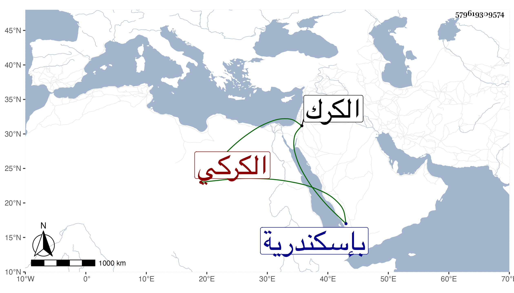

0902Sakhawi.DawLamic.ITO20230111-ara1.EIS1600.579619309574
Biography ID: 579619309574
747
قطلوبغا الكركي لكونه كان صحبة أستاذه الظاهر برقوق بالكرك . عمله بعد رجوعه إلى الملك خاصكيا وقربه وأدناه ثم أمره عشرة ولما استقر ابنه الناصر قدمه ثم قبض عليه جكم من عوض وسجنه بإسكندرية مع يشبك ثم بعد سنة أطلق وأعيد إلى تقدمته حتى مات في شعبان سنة تسع وحضر الناصر جنازته بمصلى المومني ، وكان خيرا دينا تاليا للقرآن مربوع القامة رأسا في الرمي وذكره شيخنا في أنبائه فقال : كان شابا حسنا في دولة الظاهر حفظ القرآن وكان يحسن القراءة بالألحان ممن يحب في إمرته العلماء ويجمعهم ويحسن إليهم ويتذاكرون عنده وله ذكر في مواضع من الحوادث رحمه الله .
